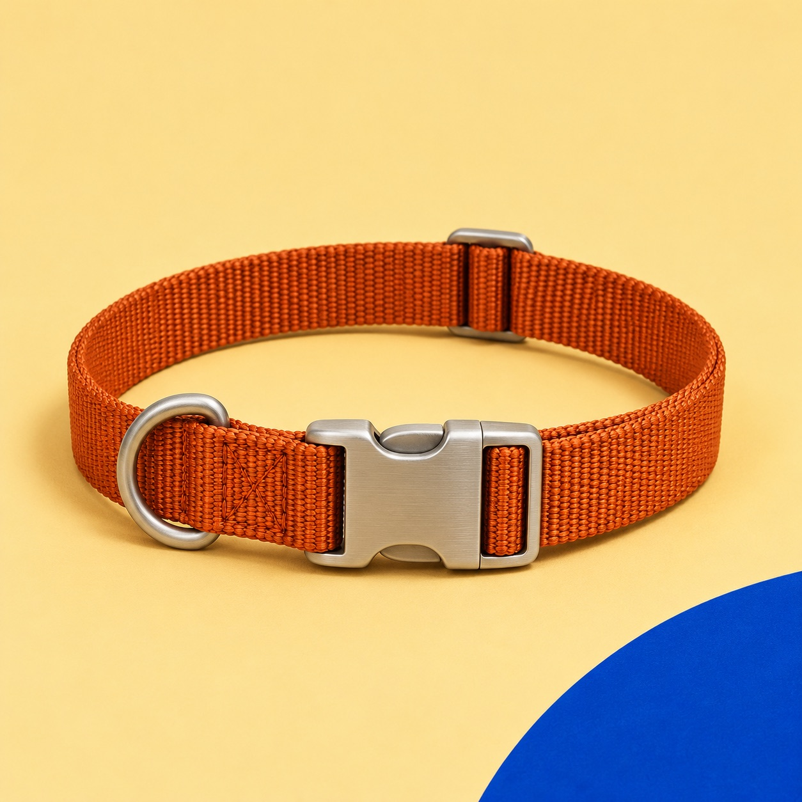
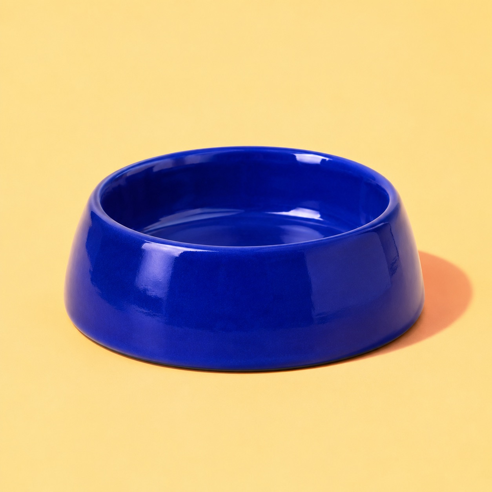
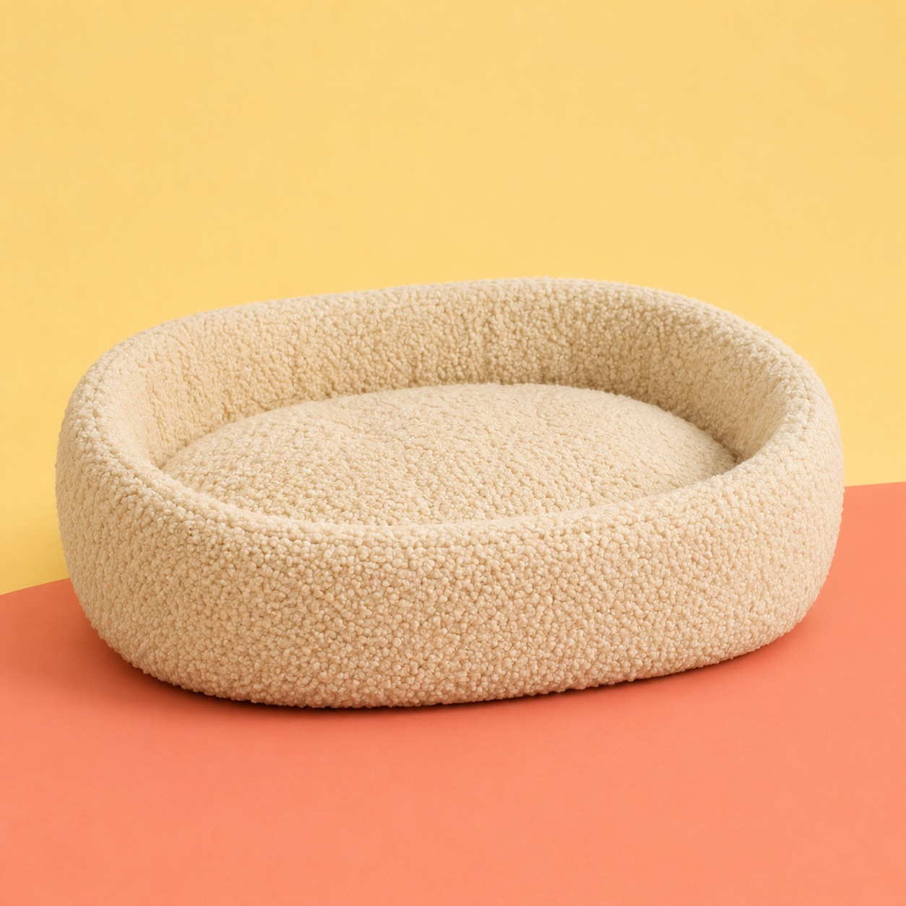

Lead with a feeling
A bold blue headline and relaxed dog photography make the brand recognisable before the product grid appears.
A pet shop with the energy of a good day out.
Colour, lived-in photography and a small, easy-to-browse range give this concept a clear personality beyond product categories.

Pet goods can feel interchangeable when everything is organised only by category. Wagmorrow puts the relationship between pets and people first, then keeps product browsing simple.
A bold blue headline and relaxed dog photography make the brand recognisable before the product grid appears.
Four familiar product types—bowl, collar, leash and bed—create a focused catalogue that visitors can scan quickly.
Quick view, add-to-bag and quantity controls allow visitors to try the shopping path without leaving the page.
The product imagery stays warm and tactile while the interface uses stronger colour and plain-spoken calls to action.



Open quick view, add an item and change its quantity. Checkout is only a demonstration; no payment is taken.
Open Wagmorrow ↗